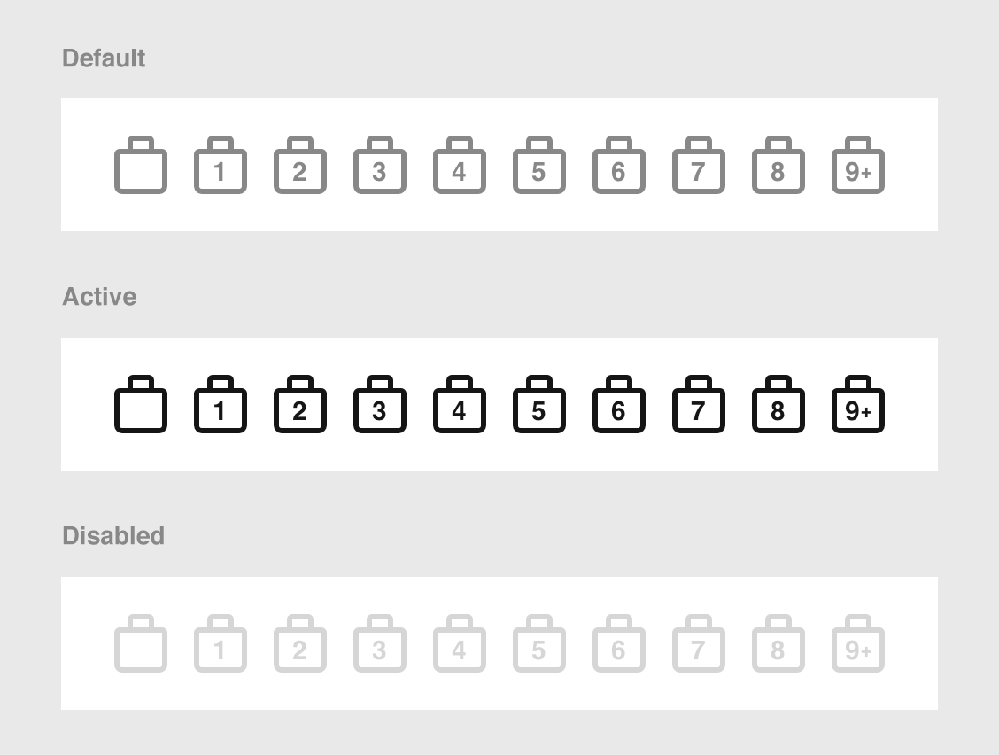
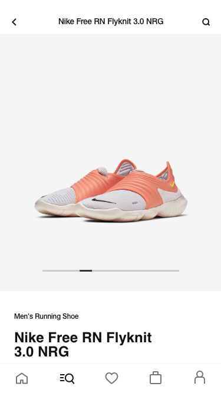
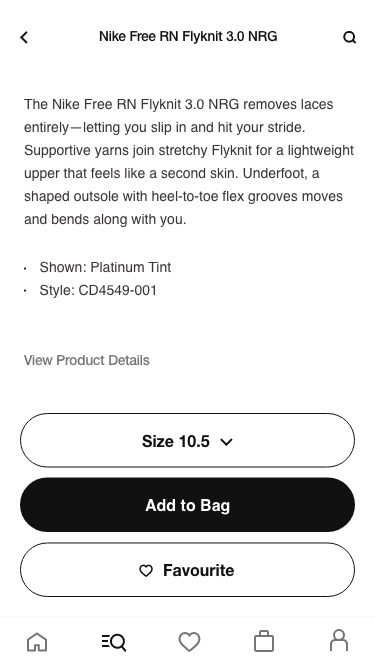
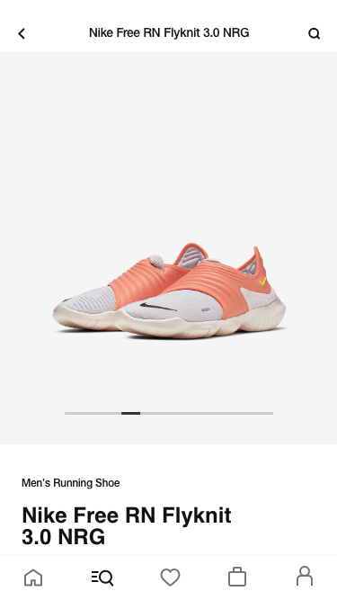
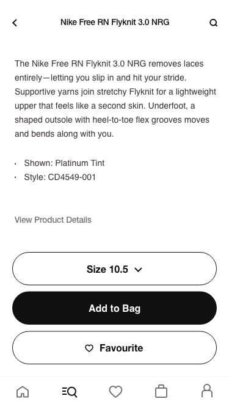
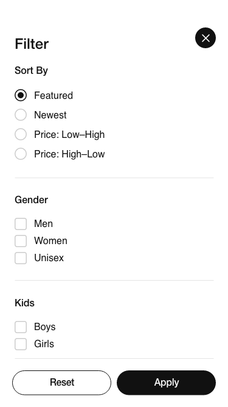
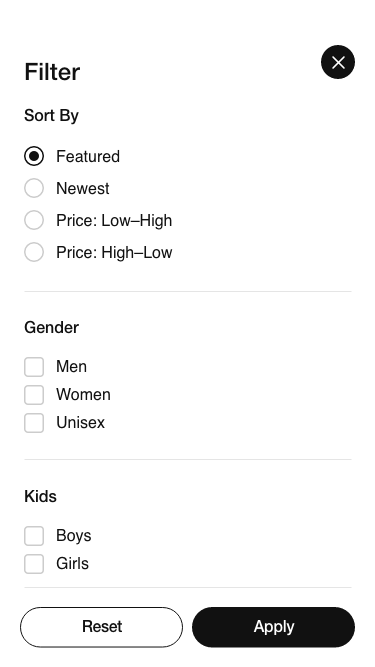

Overview
More than 10.000.000 downloads and an incredibly sleek design that defies the pass of time.
My Role
Senior Product Designer. Functional member of a ~40 people team. Having previously worked as Art Director for Nike's account at another agency and already familiar with Nike's brand guidelines, I was hired as a contractor by Huge (digital agency) to work on the Nike shopping app. This happened thanks to Fede García (now Global Executive Creative Director at Huge in Brooklyn), with whom I share a common past: He was my professor of Creativity at the ISP in Buenos Aires.

Hats worn
- Concepting
- Wireframing
- Prototyping
- UX Design
- UI Design
- Art Direction
The Challenge
The main challenge was the timeframe. We had 9-12 months to do a job that normally would take 18 months, and 3 months to come up with a functional prototype for the pitch. The brief was as large and complex as it usually is in a company of the caliber of Nike, but the main objectives revolved around four directives: minimalistic, user-friendly, in line with Nike's mission and ideally superior to "Nike SNKRS", the most recent and successful release at the time.
Problem solving example: The shopping bag icon
Each project has a certain number of problems to solve. Some problems are visible right from the beginning and others arise along the way. The idea is to provide a practical example of my thinking process, problem-solving skills and execution.
The tab bar on the first prototypes had a shopping bag icon version like this:

UXR findings
During the usability tests, we realized that several users could not distinguish if they had put one or more items in the shopping bag. This generated a little confusion that we had to resolve.
Fixing the problem and finding more insights
We came up with different ideas to solve the problem. We filter the best ideas and end up with six.
We tested all six with A/B tests and found that two performed better than the rest. We also found a particular piece of information:
Men interacted more with one of the options, which was the idea that I had proposed.
My proposal was simple: I redesigned the bag icon and made it more functional, putting the numbers inside the icon itself and not outside as others proposed. The ideation and execution took little time, as it was a resource that I had used many times throughout my career.

The style of the bag is a little bit different from the previous version. It's less rounded. I made it like that because I needed more space to fit the numbers inside and also because I wanted to replicate a real Nike shopping bag. This idea, with more straight lines, accidentally ended up being more gender-neutral and that's why we think it worked better with men during the A/B testings.
Fun Fact:
You can still find the discarded old bag icon in the app. This can be seen when the bag is empty. This could be seen as a mistake, but it was done on purpose, as the general idea of a bag is better perceived with the previous version, even if it is less realistic or functional.

Screenshots
 





 
